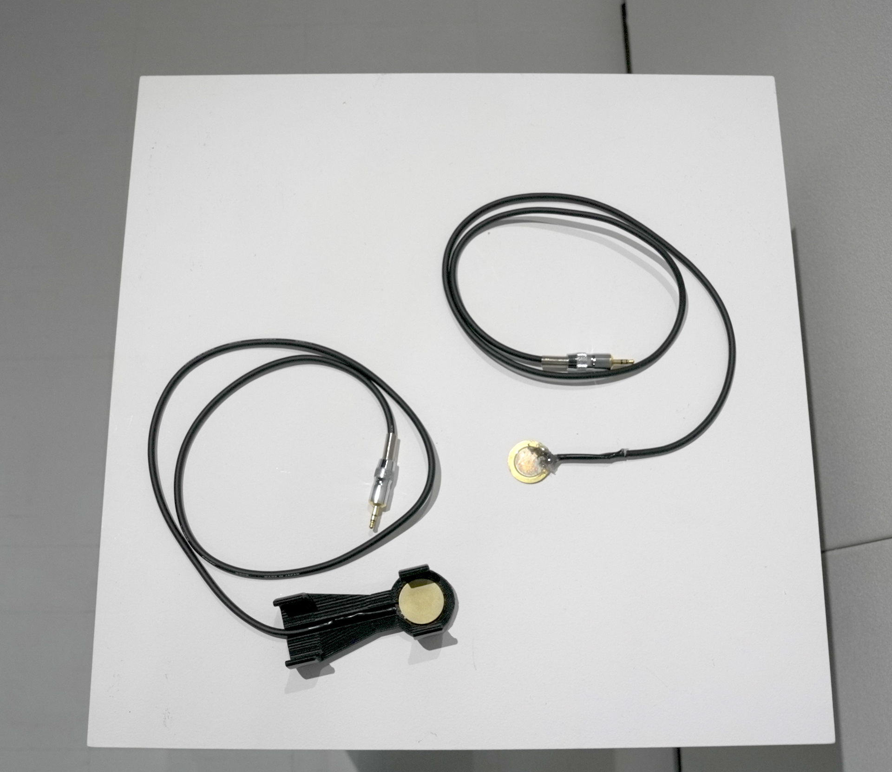
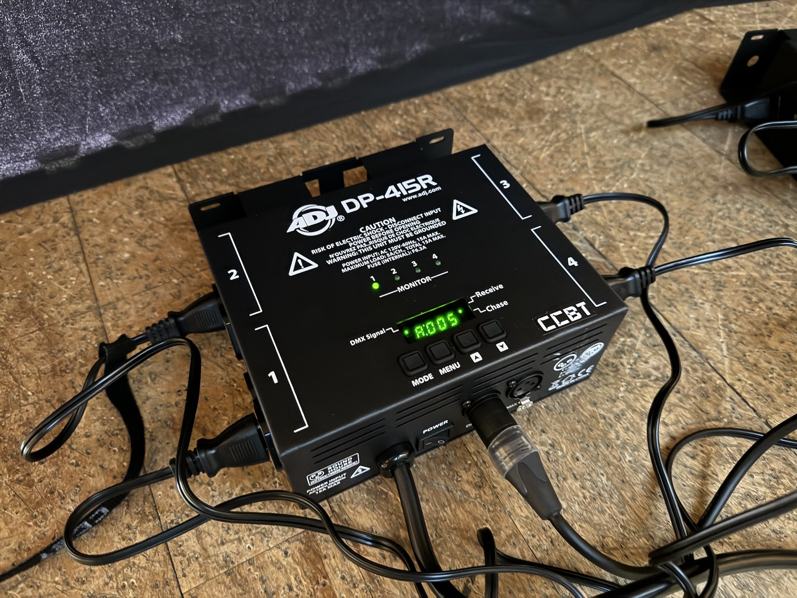

Preparation - Hardware Section

In the VisVib system, vibration sensors (contact microphones) attached to tone chimes are analyzed on a computer and converted into lighting and video.
Required Equipment by Configuration
The original configuration uses 8 tone chimes and sends information to the computer via wireless transmitter. However, as this setup is large-scale and expensive, this document presents three example configurations:
- 8 Tone Chimes with Wireless Connection
- 2 Tone Chimes with Wireless Connection
- 2 Tone Chimes with Wired Connection
| Category | Item | 8 Wireless | 2 Wireless | 2 Wired |
|---|---|---|---|---|
| Instrument | Tone Chimes | 8 | 2 | 2 |
| PC | Computer | 1 | 1 | 1 |
| Audio | Contact Microphones (Self-made) | 8 | 2 | 2 |
| Audio Transmitter | 4 | 1 | - | |
| 3.5mm to 6.3mm Plug Converter | - | - | 2 | |
| Audio Interface | A | B | B | |
| Video | Display or Projector | 1 | 1 | 1 |
| Video Connection Cable (e.g., HDMI) | 1 | 1 | 1 | |
| Lighting | Dimmer Pack | 2 | 1 | 2 |
| Incandescent Bulbs | 8 | 2 | 2 | |
| ENTEC DMX USB PRO | 1 | 1 | 1 | |
| XLR Cable | 2 | 2 | 2 | |
| XLRF3-M5 Pin Converter | 1 | 1 | 1 |
*It is not necessary to use both Video and Light system at the same time.
Instrument
These are rod-shaped instruments similar to handbells. In the workshop, we use 8 notes selected from the middle-range basic set HB-250N. The 3D-printed attachment for attaching the microphone is compatible with the two sizes in this basic set.
Computer Equipment
This document assumes a Windows environment, but it can also work in a macOS environment.
Memory: 8~ GB
OS: Windows 10 or later / macOS 13 (Ventura) or later
When works with the Video system, the computer is required to be connected to external display or projector.
Audio Equipment
Contact Microphone

We use custom-made contact microphones. These microphones pick up vibrations directly from the object they are attached to, rather than air vibrations.
These microphones can be easily made by soldering an inexpensive component called a piezo element to a cable.
For instructions on how to make the microphone, please refer to the document 1-1 How to Make a Microphone.
Audio Interface
This is a device for inputting sound from the microphone into the computer.
A
Other models such as RME FireFace UFX can be used if they have 8 or more line inputs available.
B
If you already have A, you can use it without any issues.
Audio Transmitter (for wireless connection)
SENNHEISER EW 122P G4-JB（or EW112P）
We have chosen this transmitter because it can use up to 8 units at the same time. For configurations with fewer channels, a less expensive option would also work. Be careful of wireless channel interference with other B-band devices at the venue.
Bluetooth or other transmitters can be used, but there may be latency issues.
Lighting Equipment
Dimmer

- A device that controls AC Power voltage using DMX signals.
- Other alternatives include Elation Cyber Pak or LITE-PUTER DX-402A.
- Each unit can control up to 4 channels, so 2 units are needed if using more than four lights.
DMX-USB Converter

ENTEC DMX USB PRO
- A converter adapter for controlling DMX signals from a computer via USB.
Additionally, prepare the following cables and converter adapters:
- XLR cable: The same 3-pin audio type is fine. Length as needed.
- XLR Female 3-pin to XLR 5-pin Male converter adapter
- For instance, NEUTRIK NA3F5M.
Light Bulbs
Any incandescent bulb that plugs into a regular outlet, such as clip-on lights, will do. However, do not use fluorescent or LED bulbs. While dimmable ones can be used, they are not recommended as they completely turn off below a certain brightness level.
Video Equipments
Use 1 projector or display. Any type or resolution are allowed.
Prepare the appropriate cable(e.g. HDMI or DisplayPort) and adapters depending on the projector/display and the computer.